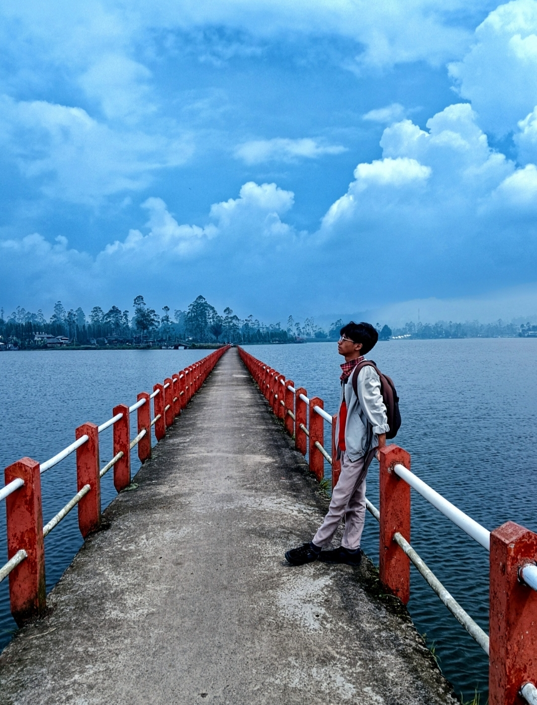
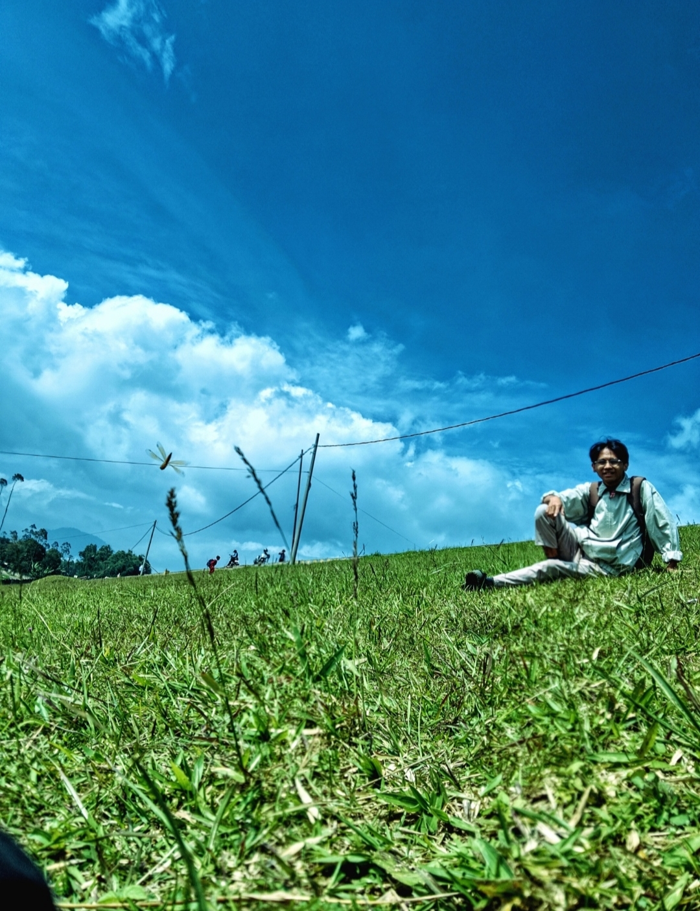
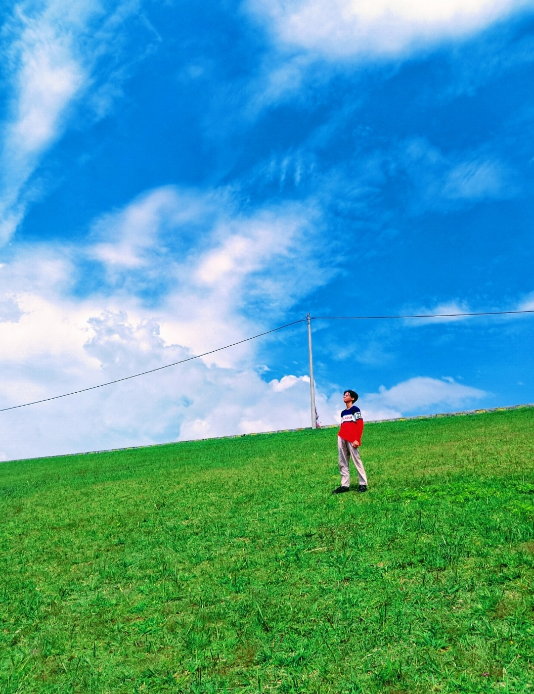

Perkenalan Karakter
Rasyid Ramadhan Prihadianto adalah mahasiswa teknik logistik yang berkuliah di Universitas Pendidikan Indonesia di Bumi Siliwangi
Ia memiliki perawakan kecil mengunakan kacamata
Informasi Karakter
| Informasi | Keterangan |
|---|---|
| Nama | Rasyid Ramadhan Prihadianto |
| Umur | 20 |
| Asal | Bandung |
| Gender | Laki Laki |
| Ciri Khas | Kacamata, Tubuh Kecil |
| Ulang Tahun | 03 Oktober 2006 |
Kemampuan
Kerjasama Tim
Memberikan dukungan dan dapat bekerja sama dengan baik untuk tim
Bahasa Jepang
Bisa berbicara dan membaca terkait bahasa jepang
Hobi dan Ketertarikan
- Menggambar
- Menulis Novel
- Menonton Anime
- Bermain Game
Galeri Gambar



Video Karakter kesukaan Rasyid
Tonton demo karakter Raiden Shogun melalui video YouTube.
Jika video tidak muncul, buka video di YouTube .
Kebenaran
"Only through Eternity are you closest to the Heavenly Principles ~RAIDEN EI."
Komunikasi merupakan aspek penting dalam suatu peristiwa yang menyebabkan kondisi menjadi lebih baik atau buruk